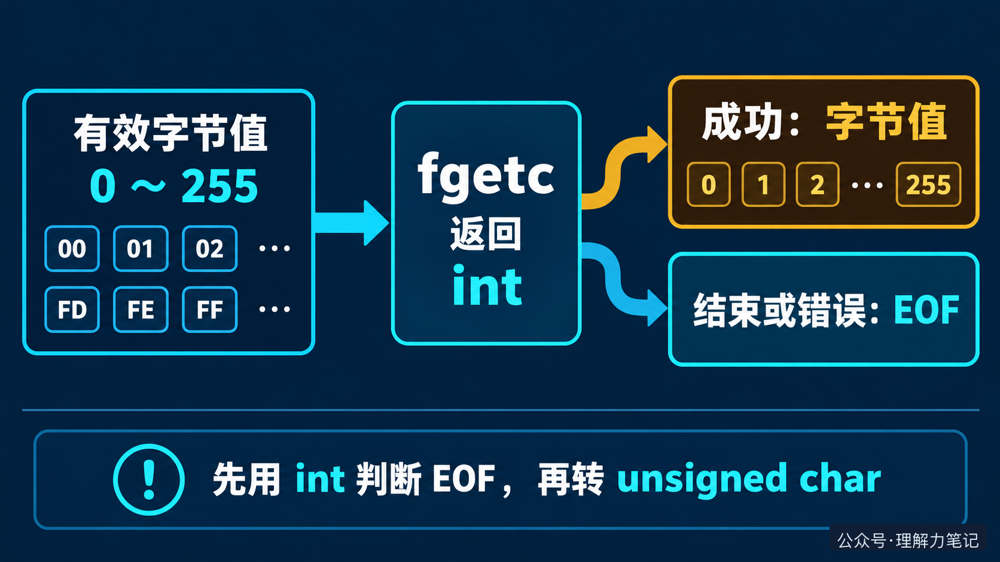

看到 fgetc 的声明，很多人会问：明明只读一个字节，为什么返回类型是 int？这个问题正好能说明标准 I/O 返回值的一条基本规律：返回值不只传递数据，还要传递这次操作的状态。
结论：
fgetc成功时返回字节值，读到末尾或发生错误时返回EOF。先用int保存并判断返回值，确认读到字节后，再按需转换成unsigned char。
文中的实验运行在 macOS 14.8.8 x86_64、Apple clang 16.0.0，未在 Linux 主机实测；接口契约依据 C17 和 POSIX 文档核对。
这篇文章怎么读？
无论你为什么点进来，都能各取所需——只解决手头问题，看第一章就够；想彻底搞懂，再往下读。
| 你是谁 | 看哪一章 | 会得到什么 |
|---|---|---|
| 搜索者 / 被推荐者 | 第一章 · 先解决问题 | 最快的答案（知其然） |
| 学习者 | 第二章 · 机制解释 | 底层的来龙去脉（知其所以然） |
| 编程者 | 第三章 · 工程使用 | 正确、能直接用的写法 |
| 求职者 | 第四章 · 面试提炼 | 会怎么问、怎么答 |
fgetc 用对工程代码通常不需要先研究 FILE 的内部结构，只要遵守返回值契约：
ch 必须是 int。循环条件先判断 EOF，成功分支里的 ch 才是一个有效字节，此时转换成 unsigned char 是安全的。输入结束后还要检查 ferror，因为 fgetc 返回 EOF 既可能是正常结束，也可能是读取失败。
这段函数只借用调用者传入的两个流，不负责打开和关闭文件。它把输入流中的字节写到输出流，遇到输入或输出错误返回 -1，成功刷新输出后返回 0。完整程序已经用 00 到 FF 的 256 个字节和空输入做过往返验证。
int在常见的 8 位字节环境里，一个字节有 256 种取值，范围是 0 到 255。fgetc 还需要表达一个额外结果：这次没有读到字节，返回 EOF。
可以把它看成取号窗口：窗口既要告诉你拿到的号码，也要告诉你“今天不再发号”或“窗口出故障”。如果只留下号码，调用者就无法判断后续该继续处理还是停止。
这里的对应关系很简单：字节值是窗口发出的号码，EOF 是窗口给出的状态，int 是能同时容纳两类结果的返回类型。类比只用于建立直觉，实际接口仍以 fgetc 的标准契约为准。

fgetc 成功时，标准要求把取得的字符按 unsigned char 的值转换为 int 返回；结束或错误时返回 EOF。因此在 8 位字节环境中，正常字节值与负的 EOF 可以区分开。
如果先把结果存进 char，信息可能在这一步丢失。下面的实验把一个真正的 FF 字节读两次，第一次是有效数据，第二次才是结束：
有符号 char 的实测输出是：
无符号 char 的实测输出是：
两种写法都会把“有效的 255”和“结束的 EOF”压缩成同一个 char 值，只是碰撞的数值不同。后面再把 char 转回 int，只是扩大已经丢失信息的结果，无法恢复原来的含义。
EOF 到底代表什么EOF 是返回值中的状态标记，不是文件里真的存在一个特殊字节。它只说明这次 fgetc 没有返回有效字节。判断 ch == EOF 后，调用 ferror(fp) 检查是否发生读取错误；没有错误时，再用 feof(fp) 确认是否正常到达文件末尾。
不要把 EOF 写成固定的 -1，应比较 <stdio.h> 提供的 EOF 宏。也不要用 unsigned char 直接接收尚未判断的返回值。正确顺序只有一句话：先用 int 接收，先判断 EOF，再保存字节。
本期没有继续展开用户态缓冲区、系统调用或内核对象，因为这些机制不会改变 fgetc 对调用者的返回值契约。理解标准 I/O，先把这个契约用对。
本文为公众号「理解力笔记」原创。转载请联系作者，并保留出处。